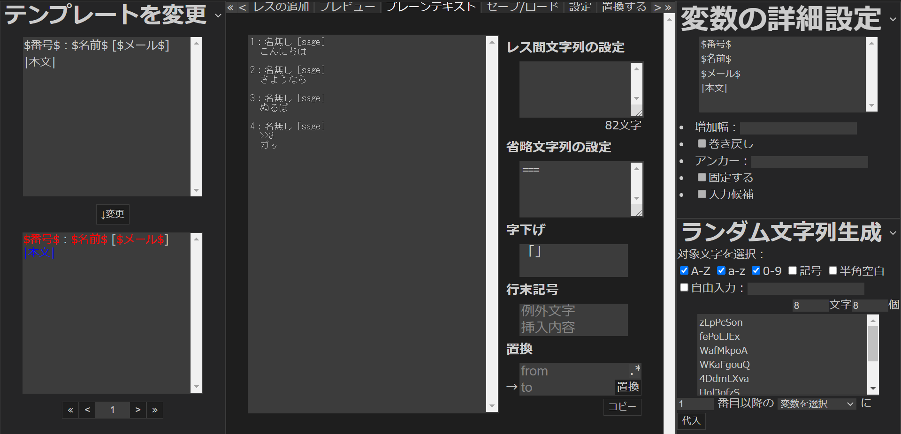

1. 作業の流れ
Anygetにおける作業は、基本的に以下の流れに沿って行われます。
- サイトにアクセスする
- 初期設定を済ませる
- 執筆する
- 作品を出力する
- セーブする
1.1 サイトにアクセスする
https://qwegat.github.io/Anyget/を開きます。
初期状態では、アクセス時の画面にはスタートメニューが表示されています。

スタートメニューは、後述のプリテンプレートを使用する場合などに便利です。
1.2 初期設定を済ませる
「テンプレートを変更」「変数の詳細設定」「ラベルの詳細設定」などのパネルやメインパネルの「設定」モードなどで初期設定を行います。
これらの機能については後の章で詳しく解説します。今回は、スタートメニューのアイコンから「掲示板」のプリテンプレートを使用しましょう。

1.3 執筆する
執筆は、メインパネルの「レスの追加」モードで行います。
テンプレートに基づいてテキストボックスが生成されているので、ここに文字列を打ち込んで「投稿を追加」をクリックしましょう。

1.4 作品を出力する
完成した作品を、目的に応じた形式で出力します。
今回は普通の小説として出力するので、「プレーンテキスト」モードを開き、テキストボックスの中身をコピーしましょう。

1.5 セーブする
作品のデータが失われてしまうと、手直しをしたくなった時に困ります。そこで、作品のセーブデータをダウンロードしておきましょう。
メインパネルの「セーブ/ロード」モードを開き、ファイル名を入力して「セーブ」することで、.json形式でファイルをセーブできます。

タブを閉じる際、ブラウザのlocalStorageに5件までのセーブデータを保存する機能もあります。
このlocalStorageのデータは、スタートメニューなどからロードすることが可能です。